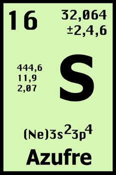

AZUFRE:

El azufre es un elemento químico de número atómico 16 y símbolo S (del latín sulphur). Es un no metal abundante con un olor característico. El azufre se encuentra en forma nativa en regiones volcánicas y en sus formas reducidas formando sulfuros y sulfosales o bien en sus formas oxidadas como sulfatos. Es un elemento químico esencial para todos los organismos y necesario para muchos aminoácidos y, por consiguiente, también para las proteínas. Se usa principalmente como fertilizante pero también en la fabricación de pólvora, laxantes, cerillas e insecticidas.
 Ir a página principal
Ir a página principal